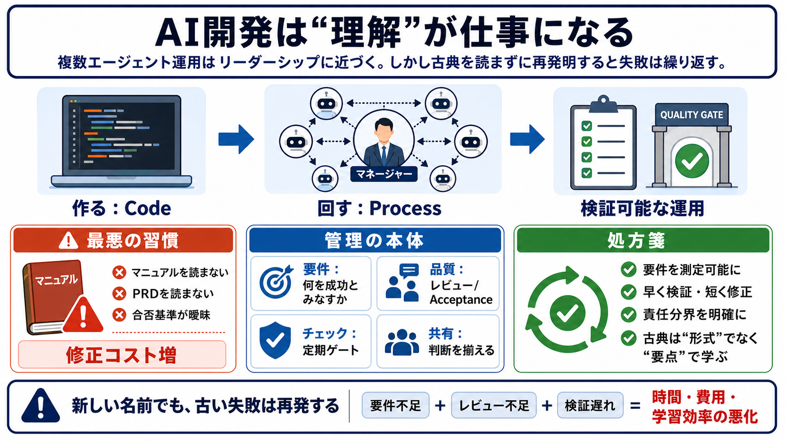

Winston W. Royce - Wikipedia
Winston Walker Royce (August 15, 1929 – June 7, 1995) was an American computer scientist, director at Lockheed Software …

複数エージェント運用がマネジメントに近づく流れは正しい。
ただし過去の実務知を読まないまま“新しい分野”として再発明すると、同じ失敗が繰り返される。
AIを扱うことで“理解がボトルネック”になりやすい。
それなのに既存の要件定義・レビュー・検証設計の「古典」を飛ばすと、時間と費用が増える。
AI開発は実装（code）だけで終わらず、運用・要件・調整（process）に寄っていく。
複数エージェントのオーケストレーションは、チームを率いるリーダーシップに似る。
AIエージェント運用では、要件の優先順位・成果物の合否基準・定期チェックが成果を左右する。
「何を成功とみなすか」を先に固定する。
長大な成果物を精査できる基準を持つ。
検証ポイントを設計し、早く修正する。
関係者の理解と判断を揃える。
過去の管理問題（要件不足・レビュー不足・検証遅れ）を、AIならではの新課題として言い換え直すだけになりがちだ。
PRDを読まずにAIが作る → 方向性がズレる。
修正コストが後追いで膨らむ。
不足しているのはプロセスの欠片（要件/合否/検証）。
同じ失敗を“別の名前”で繰り返す。
AIのマネジメントも、TDD/PRD/ウォーターフォールの“思想”としての要点は転用できる。
狙いは「枠組みをそのまま当てはめる」ではなく、要件明確化と検証設計を学び直すこと。
コード→運用・要件・調整へ。
過去の知見を学ばず、同じ失敗を繰る。
検証が遅れるほど、時間/費用/学習効率が悪化。
“新しさ”で儲かると、知識の近道が起きにくい。
AI管理はプログラム管理と完全同一ではないが、要件優先順位・品質基準・定期チェック・コミュニケーションは共通する。
ウォーターフォールは万能ではない。
要件不明確＋レビュー不足は、プロセスの型を問わず起きる。
AIが誤った前提で進むリスクを抑える鍵は、要件の明確化と検証ポイントの設計にある。
要求を測定可能にする（測れない成功はズレる）。
成果物を“合/否”で切れる形にする。
早い段階で検証し、修正サイクルを短くする。
意思決定と承認の責任を曖昧にしない。
「理解がボトルネック」は、複数エージェント・要件・品質基準・フィードバックループが絡むほど強くなる。
実装より先に「正しい前提で意思決定できるか」。
エージェント増は統合/検証の協調コストを増やす（The Mythical Man-Monthの構造）。
古い分野への不信、第一原理志向、新奇性で稼ぐインセンティブが混在。
単一原因で断定せず、自組織の欠落工程を分解して確認する。
結局、学ぶべきは要件定義・レビュー・定期チェック・コミュニケーションと品質保証という古典的な実務だ。
AIの出力不確実性を前提に、検証可能性へ再設計する慎重さが必要になる。
PMBOK
プロジェクト管理の体系。要件・計画・統制の考え方。
The Mythical Man-Month
人員増と協調コストの関係（=スケールの破綻）。
プログラム/大規模ソフトウェア開発の教科書
レビュー手順、成果物の品質保証、コミュニケーション設計。
The Goal
ボトルネック最適化の古典。理解が支配する局面の洞察。
Winston Walker Royce (August 15, 1929 – June 7, 1995) was an American computer scientist, director at Lockheed Software …
The first formal description of the Waterfall model in the software industry was outlined in 1970, in a paper called Man…
Importance of Documentation – Now he starts to describe his solution to the waterfall problem in five steps. I will spar…
| PragTob You probably know that there is the Waterfall process – by now feared by most as “the father of the plan driv…
There is an iterative interaction between the steps. For example, testing can influence Program Design. Likewise, Progra…